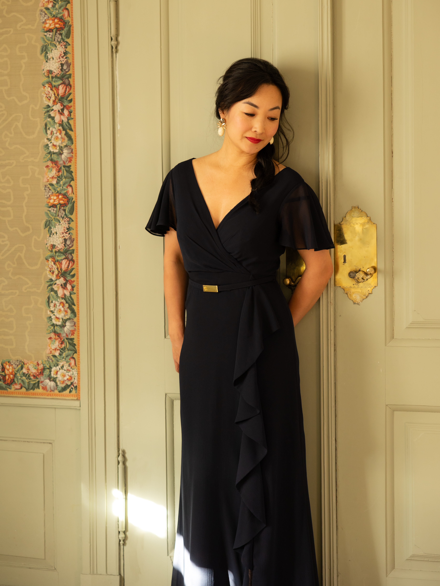

Sopran
Susanne Mørk
Sopranen Susanne Mørk studerte ved Barratt Due musikkinstitutt med prof. Anne Nyborg og senere ved Norges musikkhøgskole, hvor hun tok en master med fordypning i fransk barokk og musikken ved Versailles, med prof. Mona Julsrud som lærer. Hun har sunget kirkemusikk av blant andre Charpentier og François Couperin med barokkensembler i kirker og historiske rom. Hun har også sunget tittelrollen i La Calisto sammen med L’État Libre de Neige.
Hun søker den nære klangen i fransk barokk, musikk som ble skrevet for små rom, og arbeider med restituert uttale, barokk retorikk og ornamentikk. Hun er særlig opptatt av å gjøre sjelden fremført repertoar tilgjengelig for et nytt publikum.